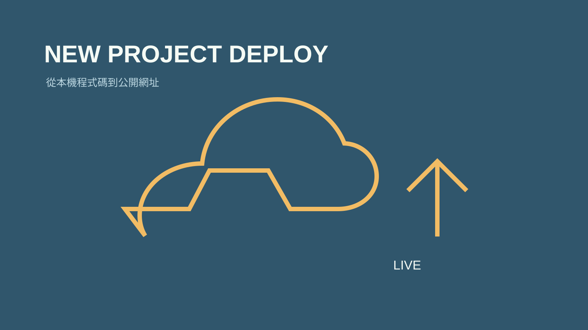

技能包 · 生產力工具
新專案部署管線
2026.08 · 個人專案

FIG. 25 — 產品主畫面
關於這個作品
新專案部署管線將公開發布拆成可追蹤的步驟：建立 GitHub 儲存庫、設定 Zeabur 服務與網域、處理 Firebase 環境變數，再從建置與服務日誌確認最終結果，留下可回顧的部署紀錄。
作品亮點
建立 GitHub 儲存庫並推送可部署程式碼
設定 Zeabur 專案、服務、公開網域與環境變數
處理 Firebase 等前端服務的部署設定
以建置與服務日誌驗證公開發布結果